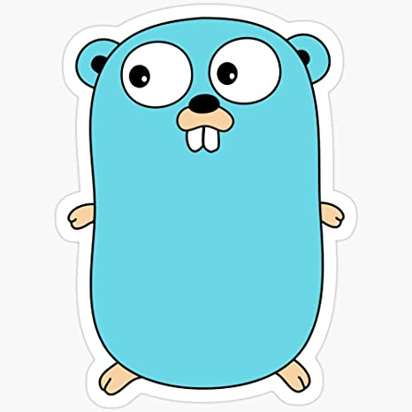

Projects
 Dad Jokes MicroService Game Of Life
Game Of Life Python Playground
Python PlaygroundLaura Ashley Roesler
◈
Software Engineer III
Golang Backend Developer
Expected Graduation Fall 2024
Graduated Fall 2018
B.S. in Computer Science
Full stack web developer
Atlanta, GA
www.linkedin.com/in/lauraaroeslerPursuing a Master of Science degree at Georgia Tech in Computer Science, expected graduation date of Fall 2024. Achieved a Bachelor's in Science in Computer Science with experience in Object Oriented Design, software development, full-stack web development. Understands and can meet the demands of a fast-paced environment. Have been praised for exceptional attention to detail with a high value for work ethic. Can work both creatively and analytically in a problem-solving environment.
Contributed to building several microservices as the company migrated from a monolithic structure to a component-based system. Services were built based on a service layer architecture with a goal of clean code and clean architecture ensuring scalable, reliable, testable, containerized microservices.
Tools and Languages: GoLang, AWS, Kafka, RabbitMq, PostGres, MySQL, DynamoDB,Redis, Kubernetes, DataDog, Humio, CircleCi, GitHub Actions, Kubernetes, Helm Charts, LaunchDarkly, Docker
Practice with building an entire interactive website that collects and displays information from several databases across the company and provide updates as content is migrated from one source to another. Experience with creating a ASP.NET platform to test the development of the website in different environments from local to production. Training with API calls and SQL queries to concatenate the appropriate data. Engaged in Scrum and Agile methodologies. Involvement with version control Git, Gitlab, GitHub.